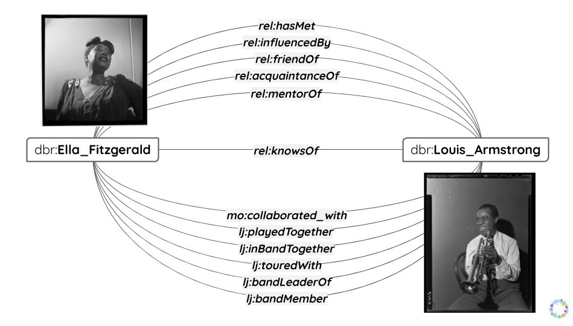

ENHANCED LINKED JAZZ ONTOLOGY
(DATA MODEL)
The creation of linked data requires an ontology, which is a published set of classes and properties that is encoded for machine processing. The Enhanced Linked Jazz Ontology (Data Model) describes how the Linked Jazz ontology was expanded for the Linking Lost Jazz Shrines project.
People—and jazz musicians in particular—are at the heart of the Linked Jazz project. Therefore, "person" is the main type of class (or "entity") in the dataset, and the properties (or "relationships") present in the Linked Jazz data are those that can be held between two people. Shown below are the core properties used in the Linked Jazz project.
Note: Properties prefixed with "lj:" were minted for Linked Jazz by the project team because they did not yet exist. Properties prefixed with "mo:" are originally from the Music Ontology, and properties prefixed with "rel:" are from the Relationship Ontology.

The Linking Lost Jazz Shrines project team was happy to learn that the Linked Jazz project did have a vision toward the inclusion of additional types of classes, including music group and music venue, into the Linked Jazz data environment (Pattuelli, Provo, & Thorsen, 2015). To this end, in addition to the class of borough (Q18809), music group (Q18805) and music venue (Q18806) were also added as classes to the Wikibase.
Also serendipitous, the Linking Lost Jazz Shrines Project came about at a time when the Linked Jazz project data was being moved to Wikibase. This presented a great moment of flexibility for the adjustment and expansion of the Linked Jazz properties. To the right is a list of the original Linked Jazz properties with their counterparts in the Semantic Lab at Pratt's Wikibase. Through this process, eight new properties were added to the Wikibase for use with the Linking Lost Jazz Shrines project and, eventually, Linked Jazz.
Note: All of the original Linked Jazz properties had both domain and range of person. With the incorporation of the new classes, the domain and/or range of some of these properties are now no longer limited to just a person.
Updated Property Key‡ domain can also be "music group"* range can also be "music group"👥 range can only be "music group"🏛️ range can only be "music venue"🌍 range can only be "borough"
Linking Lost Jazz Shrines Properties
attended performance of (P63) *
attended performance at (P112) 🏛️